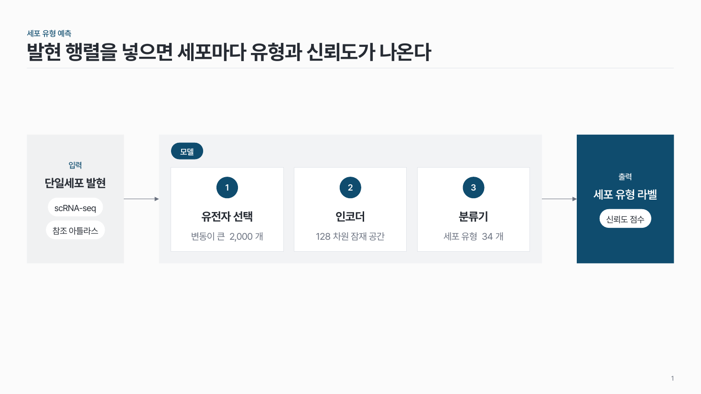
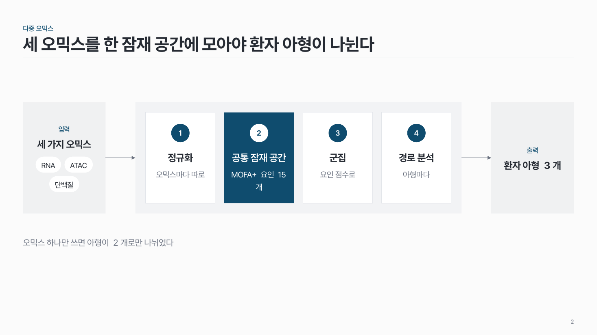
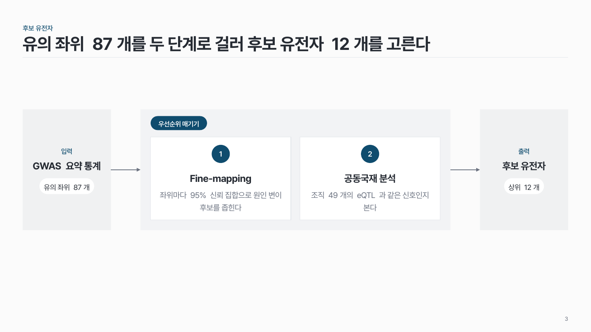

입력 → 처리 → 출력 flow-10
방법 · 알고리즘을 한 장으로. 왼쪽 입력 칸, 가운데 번호 단계 2–4개를 묶은 구역, 오른쪽 출력 칸.

이 시안
단계 3개 · 구역 이름 · 양 끝 칩 · 출력 칸 강조
슬라이드 제목: 발현 행렬을 넣으면 세포마다 유형과 신뢰도가 나온다
항목 수
언제 쓰나
방법 · 모델 · 알고리즘이 무엇을 받아 무엇을 내놓는지가 메시지일 때요. 가운데 단계는 처리 순서이거나 모듈 구성이에요. 방법 개요 장, 논문 Figure 1 같은 전체 흐름 소개에 맞아요.
이럴 땐 다른 패턴
구성
- 왼쪽 입력 칸: 작은 머리말 + 이름 + 짧은 낱말 칩(데이터 이름 등).
- 가운데 옅은 회색 구역: 왼쪽 위에 구역 이름(예: 모델), 안에 번호 단계 2–4개 (번호 + 이름 + 설명 1–2줄).
- 오른쪽 출력 칸: 입력 칸과 같은 폭, 같은 짜임.
- 화살표는 입력 → 구역, 구역 → 출력 둘만.
- 강조는 한 곳: 출력 칸 또는 핵심 단계 하나.
지킬 것
- 가운데 단계 2–4개, 이름 10자 이내.
- 입력 · 출력 칩은 1–4개, 짧은 낱말로.
- 양 끝 칸은 폭과 짜임을 같게.
하지 말 것
- 가운데 단계끼리 화살표로 잇지 않아요. 번호와 위치로 순서가 읽혀요.
- 입력 · 구역 · 출력을 서로 다른 색으로 칠하지 않아요.
- 설명을 세 줄 넘게 늘이지 않아요. 길면 단계 표로.
시안 비교
같은 내용을 옵션만 바꿔 그렸어요. 그림을 누르면 크게 보여요.
A단계 3개 · 구역 이름 · 양 끝 칩 · 출력 칸 강조
슬라이드 제목: 발현 행렬을 넣으면 세포마다 유형과 신뢰도가 나온다

B단계 4개 · 구역 이름 없음 · 둘째 단계 강조 · 결론 줄
슬라이드 제목: 세 오믹스를 한 잠재 공간에 모아야 환자 아형이 나뉜다

C단계 2개 · 구역 이름 · 설명 두 줄 · 강조 없음
슬라이드 제목: 유의 좌위 87개를 두 단계로 걸러 후보 유전자 12개를 고른다